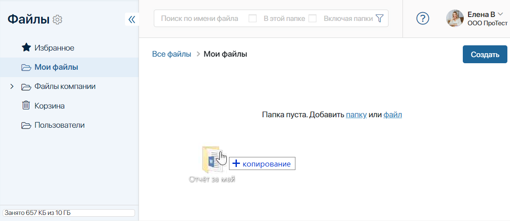
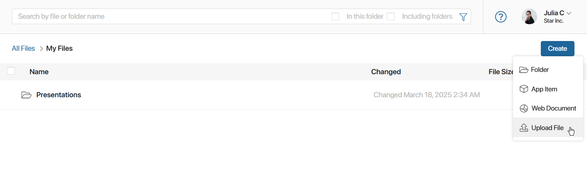
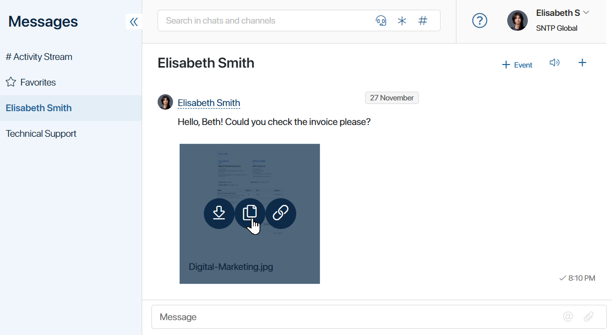
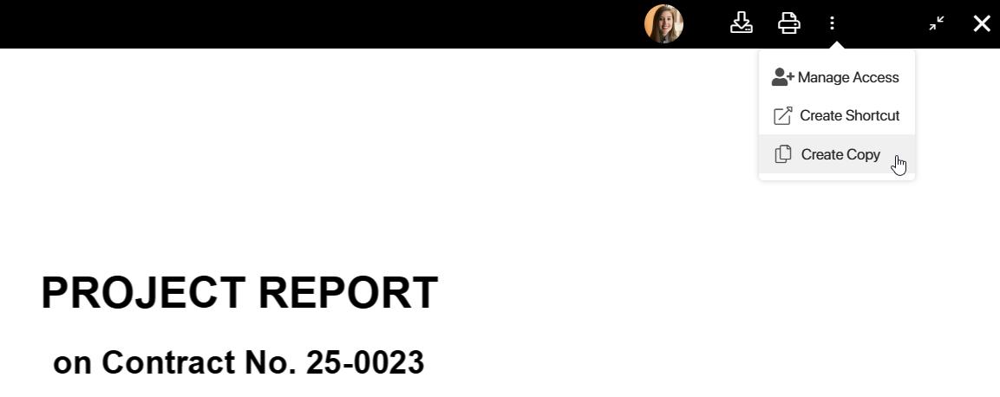
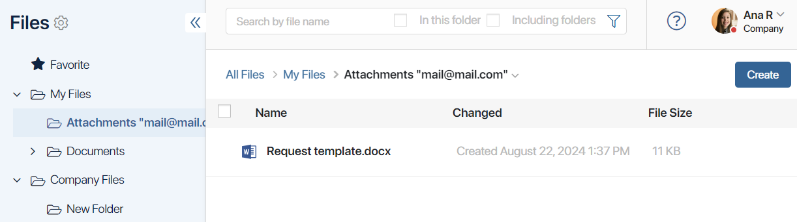
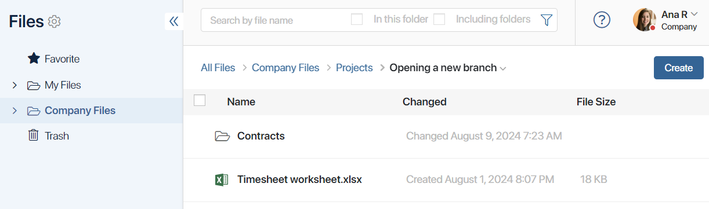
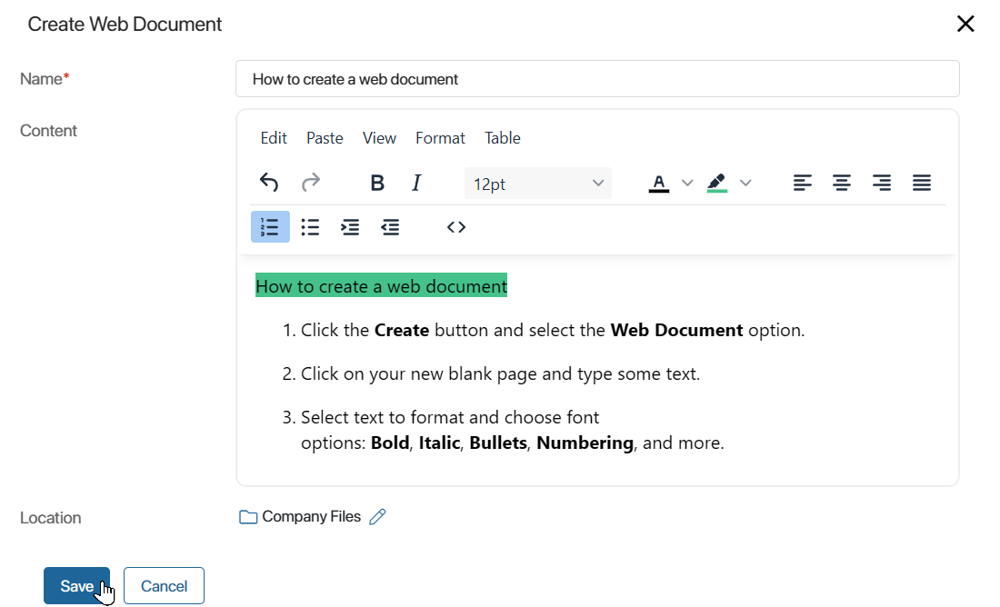
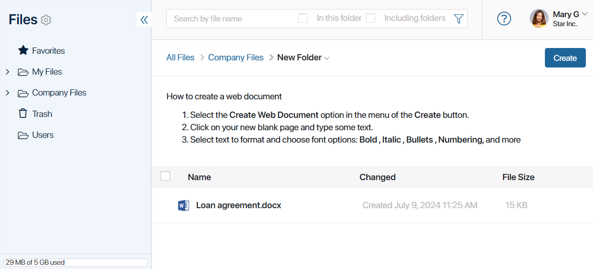

In the Files workspace, you can:
- Upload folders with files.
- Upload files with different formats.
- Add links to app items.
- Create web documents for pages in the workspace folders.
Please note that the size of the storage for storing objects in the Files workspace and the amount of free space depend on the BRIX edition. In BRIX SaaS, you can view the remaining disk space and increase its volume in the Administration > License Management workspace. Read more in Free storage space.
Add a folder with files
You can drag and drop one or more file folders from your computer. The subfolders will also be loaded into the system.

Add a new file
There are several ways to add a new file to the system:
- Upload a file from your PC.
- In the upper right corner of the page, click the Create button. In the drop-down list, select Upload File. In the window that opens, you can select multiple files to upload.

- In an empty folder, click the file link in the center of the page or drag the file from the PC to the folder. Multiple files can be selected.

- Create a copy of a file from a session, chat, channel, or associated activity stream.
You can save files added during correspondence in sessions and chats, as well as in comments in channels or associated activity stream of tasks and app items. To do this, hover over a file, and then click the icon. In the opened window, select the folder where you want to save the document, and then click Create.

- Create a copy of a document from the Files type field.
You can save documents added to the app and task item pages using the Files type field. To do this, click on the file and open it in preview mode. In the upper-right corner of the page, click the three dots and select Create Copy. In the opened window, specify the folder where the document will be saved and click Create.

- Open an attachment from an email.
If you have connected your email address to the built-in client in the Email workspace, the Attachments folder will be added to Files. As you open attachments in your emails, they are saved to this folder. If you delete an email with an attachment from the client, the attachment file will be deleted, too.

- Add a file to projects.
For each new project, a folder in Files > Company Files > Projects is created. Documents added to the project page are automatically saved in it.

Add a link to an app item
In the workspace, you can create not only files but also items of apps that store necessary data. You can do it in two ways: create a new app item or add a link to an existing one. Using the generated links, you can quickly open the page of the item without going to the app. For example, in the Contracts folder, alongside files, you can store links to items with information about contractors.
To create a link to an app item:
- Go to the folder in the Files workspace where you want to display the link to the item.
- Click the Create button and select the App Item option.
- In the window that opens, specify the system app.
- Next, you can:
- Select an existing app item.
- Add a new item. To do this, click the Create New button and fill out the form.
- Click Save.
The link to the item will appear in the specified folder. It is displayed for all users who have the permissions to view the folder. However, only those who have the permissions to access app data will be able to open the item page.
You can:
- Delete the link to an item from the folder by hovering over the item name and clicking the recycle bin icon. The item will remain accessible in the app in which it was created.
- Move the link to an item to another folder. To do this, hover the cursor over its name, click on the icon, and select the desired folder.
- Select several links simultaneously to delete them or move them to another folder. Bulk actions with links are performed in the same way as with files.
- On the item page, you can display a list of all folders that contain links to it. For this purpose, the List of Directories with App Link widget is placed on the app form. Using it, you can move existing links to the item between folders, delete them, and add a new entry about it in the selected folder.
Add a web document
A web document is a .web365 file used to model the workspace in the Files workspace. You can add any text, video, or image to it. The web document is created in a special built-in editor. Upon saving, the document’s content is converted into HTML markup. It can then be placed on the page of the Files workspace, within a specific folder.
Thus, the folder page can display instructions on working with files, links to useful data, images, video materials, and other information.
To create a web document:
- Go to any folder in the Files workspace.
- Click the Create button and select the Web Document option.
- In the window that opens, configure the content of the web document. In the built-in editor, you can format text, create bullet and numbered lists, change the font and background color, undo actions, add links, images, and HTML text templates. Quick text formatting buttons are located on the top panel.

- You can change the folder in which the web document will be saved. To do this, in the Location field, click on the pencil icon.
- Save the file.
After creating the web document, add its content to the folder page. To do this, in the list of available actions with the folder, select the option Link to Web Document. In the window that opens, specify the web document and determine its location on the folder page: above or below the file list. Save the changes.

The created web document can be placed on the page of one folder. To remove the document content from the page, in the list of available actions with the folder, select Link to Web Document, click Unattach, and save the changes. For more details, read the article Actions with folders.
Found a typo? Select it and press Ctrl+Enter to send us feedback